Section A (multiple choice) — Questions 1 to 60 are multiple choice with every correct answer carrying 1 mark and every wrong answer carrying −0.25 mark. [1]
Which of the following organelle is the site for ribosome synthesis?
- (a) Ribosomes
- (b) Cytoplasm
- (c) Nucleus
- (d) Nucleolus
Topic: Biology Metodi: Physical Modeling Competenze: Physical Reasoning Objects: — Fonte: Testo (PDF) — p.1
**Sezione A (scelta multipla) ** Le domande da 1 a 60 sono di scelta multipla, con ogni risposta corretta con un punteggio e ogni risposta sbagliata con un punteggio -0,25. [1]
Quale delle seguenti organele è il sito di sintesi del ribosoma?
- a) Ribosomi
- b) citoplasma
- (c) nucleo
- d) Nucleolus
Topic: Biology Metodi: Physical Modeling Competenze: Physical Reasoning Objects: — Fonte: Testo (PDF) — p.1
In the chemical reaction
- (a) bromine is reduced and water is oxidized
- (b) bromine is oxidized and carbonate is reduced
- (c) bromine is both oxidized and reduced
- (d) bromine is neither oxidized nor reduced
Topic: Chemistry Metodi: Physical Modeling Competenze: Physical Reasoning Objects: — Fonte: Testo (PDF) — p.1
Nella reazione chimica
- a) si riduce il bromo e si ossida l’acqua
- b) il bromo viene ossidato e il carbonato ridotto
- c) il bromo è sia ossidato che ridotto
- il bromo non è né ossidato né ridotto
Topic: Chemistry Metodi: Physical Modeling Competenze: Physical Reasoning Objects: — Fonte: Testo (PDF) — p.1
A flat mirror creates a virtual image of your face. Which of the following optical elements in combination with the flat mirror can form a real image?
- (a) Convex lens
- (b) Concave lens
- (c) Concave mirror
- (d) Convex mirror
Topic: Geometric Optics Metodi: Ray Tracing Competenze: Diagrammatic Reasoning Objects: Mirror, Lens Fonte: Testo (PDF) — p.1
Uno specchio piatto crea un’immagine virtuale del tuo viso. Quale dei seguenti elementi ottici in combinazione con lo specchio piatto può formare un’immagine reale?
- a) Lenti convex
- b) Lenti concave
- (c) specchio concavo
- (d) specchio convex
Topic: Geometric Optics Metodi: Ray Tracing Competenze: Diagrammatic Reasoning Objects: Mirror, Lens Fonte: Testo (PDF) — p.1
Change in enthalpy () for combustion of fuel is:
- (a) Positive
- (b) Zero
- (c) Negative
- (d) May be negative or positive
Topic: Thermodynamics Metodi: First Law of Thermodynamics Competenze: Physical Reasoning Objects: — Fonte: Testo (PDF) — p.1
La variazione dell’entalpia () per la combustione del carburante è:
- a) positivo
- b) Zero
- c) Negativo
- d) Può essere negativo o positivo
Topic: Thermodynamics Metodi: First Law of Thermodynamics Competenze: Physical Reasoning Objects: — Fonte: Testo (PDF) — p.1
Phospholipid ‘Cardiolipin’ is unique to cell membranes of -
- (a) Chloroplasts
- (b) Mitochondria
- (c) Golgi complex
- (d) Nucleus
Topic: Biology Metodi: Physical Modeling Competenze: Physical Reasoning Objects: — Fonte: Testo (PDF) — p.1
Il fosfolipido “cardiolipina” è unico nelle membrane cellulari di:
- a) Cloroplasti
- b) Mitocondria
- (c) complesso di Golgi
- d) nucleo
Topic: Biology Metodi: Physical Modeling Competenze: Physical Reasoning Objects: — Fonte: Testo (PDF) — p.1
During aerobic respiration, energy is released in stepwise manner and ATP formation takes place with the help of this energy. What will happen if this energy is released at a single step instead of in parts?
- (a) Incomplete oxidation of glucose takes place
- (b) all the amount of energy can be utilized by the cell as more ATP molecules are produced
- (c) maximum amount of this released energy is wasted in form of heat and cell may die
- (d) cell will follow anaerobic pathway of respiration
Topic: Biology Metodi: Physical Modeling Competenze: Physical Reasoning Objects: — Fonte: Testo (PDF) — p.2
Durante la respirazione aerobica, l’energia viene rilasciata in modo graduale e la formazione di ATP avviene con l’aiuto di questa energia. Cosa accadrà se questa energia viene rilasciata in un solo passo invece di in parti?
- (a) Si verifica un’ossidazione incompleta del glucosio
- b) la quantità di energia che la cellula può utilizzare in quanto vengono prodotte più molecole di ATP
- c) la quantità massima di questa energia rilasciata viene sprecata sotto forma di calore e la cellula può morire
- (d) la cellula seguirà la via di respirazione anaerbica
Topic: Biology Metodi: Physical Modeling Competenze: Physical Reasoning Objects: — Fonte: Testo (PDF) — p.2
Consider the circuit below:
Quesito 7
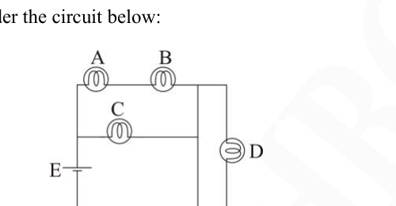
- (a) If the bulb A burns out, then bulb C stays lighted, bulb B burns brightly
- (b) If the bulb B burns out, then bulb C goes off and D stays lighted
- (c) If the bulb C burns out, bulbs A and B go off
- (d) If the bulb D burns out, the event is unnoticeable, and bulbs A, B, C stays lighted.
Topic: Circuits Metodi: Kirchhoff’s Laws Competenze: Diagrammatic Reasoning Objects: — Fonte: Testo (PDF) — p.2
Considerate il circuito di seguito:
Quesito 7
- (a) Se l’ampolla A si spende, l’ampolla C rimane accesa, l’ampolla B si spende brillantemente
- (b) Se l’ampolla B si spinge, l’ampolla C si spinge e la D rimane accesa
- (c) Se l’ampolla C si spinge, le ampolle A e B si spengono
- (d) Se l’ampolla D si spende, l’evento è impercepbile e le ampolle A, B e C rimangono accese.
Topic: Circuits Metodi: Kirchhoff’s Laws Competenze: Diagrammatic Reasoning Objects: — Fonte: Testo (PDF) — p.2
All molecules in the following set are allotropes of carbon:
- (a) Charcoal, lead, coke
- (b) Galena, glassy carbon, graphite
- (c) Bucky balls, graphite, diamond
- (d) Charcoal, wood, soot
Topic: Chemistry Metodi: Physical Modeling Competenze: Physical Reasoning Objects: — Fonte: Testo (PDF) — p.2
Tutte le molecole del seguente set sono allotropi di carbonio:
- a) carbone, piombo, coca
- b) Galena, carbonio vetrato, grafite
- (c) palle di bucky, grafite, diamanti
- d) carbone, legno, fuliggine
Topic: Chemistry Metodi: Physical Modeling Competenze: Physical Reasoning Objects: — Fonte: Testo (PDF) — p.2
A pendulum moves back and forth under the influence of gravity from to with time period T, as shown in figure. At time , it is at ; when , then:
Quesito 9
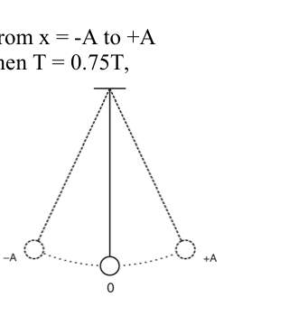
- (a) it is at and travelling towards
- (b) it is at and travelling towards
- (c) it is at and at rest
- (d) it is between and and is travelling towards
Topic: Oscillations & Waves Metodi: Simple Harmonic Motion Analysis Competenze: Diagrammatic Reasoning Objects: Pendulum Fonte: Testo (PDF) — p.2
Un pendolo si muove avanti e indietro sotto l’influenza della gravità da a con periodo T, come mostrato nella figura. Al momento , è a ; quando , allora:
Quesito 9
- a) si trova a e si dirige verso
- b) si trova a e si dirige verso
- c) è a e a riposo
- d) si trova tra e e si dirige verso
Topic: Oscillations & Waves Metodi: Simple Harmonic Motion Analysis Competenze: Diagrammatic Reasoning Objects: Pendulum Fonte: Testo (PDF) — p.2
A solution of is 80% by weight, having specific gravity 1.73. Its normality is:
- (a) 18.0
- (b) 28.2
- (c) 1.0
- (d) 10.0
Topic: Chemistry Metodi: Physical Modeling Competenze: Unit Conversion Objects: — Fonte: Testo (PDF) — p.3
Una soluzione di è di peso dell’80% e ha una gravità specifica di 1,73. La sua normalità è:
- (a) 18.0
- (b) 28.2
- (c) 1.0
- (d) 10.0
Topic: Chemistry Metodi: Physical Modeling Competenze: Unit Conversion Objects: — Fonte: Testo (PDF) — p.3
Which of the following complementary structures will be produced during replication of DNA sequence 5’-TpApGpApGpAp-3’ ?
- (a) 5’-GpCpGpAp-3’
- (b) 5’-ApTpCpTp-3’
- (c) 5’-UpCpUpAp-3’
- (d) 5’-TpCpTpAp-3’
Topic: Biology Metodi: Physical Modeling Competenze: Physical Reasoning Objects: — Fonte: Testo (PDF) — p.3
Quali delle seguenti strutture complementari saranno prodotte durante la replicazione della sequenza di DNA 5’-TpApGpApGpAp-3’?
- a) 5’-GpCpGpAp-3’
- b) 5’-ApTpCpTp-3’
- c) 5’-UpCpUpAp-3’
- d) 5’-TpCpTpAp-3’
Topic: Biology Metodi: Physical Modeling Competenze: Physical Reasoning Objects: — Fonte: Testo (PDF) — p.3
Let there be a rigid wheel rolling without sliding on a horizontal surface.
Quesito 12
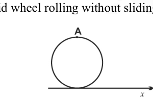
The path of point ‘A’ as seen by an observer on the ground, when the wheel is moving along x axis is:
Quesito 12
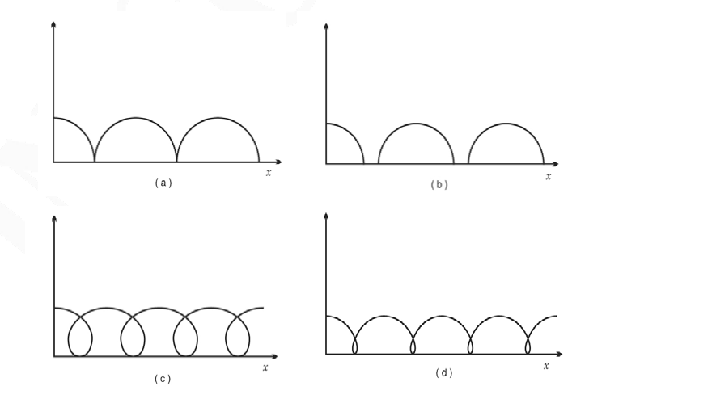
Topic: Rotational Dynamics Metodi: Physical Modeling Competenze: Diagrammatic Reasoning Objects: Wheel Fonte: Testo (PDF) — p.3
Lasciate che una ruota rigida ruoli senza scivolare su una superficie orizzontale.
Quesito 12
Il percorso del punto “A” visto da un osservatore a terra, quando la ruota si muove lungo l’asse x è:
Quesito 12
Topic: Rotational Dynamics Metodi: Physical Modeling Competenze: Diagrammatic Reasoning Objects: Wheel Fonte: Testo (PDF) — p.3
Two identical balls (1 and 2) collide on a frictionless surface. Collision may or may not be elastic. Which of the views physically impossible situation?
Quesito 13
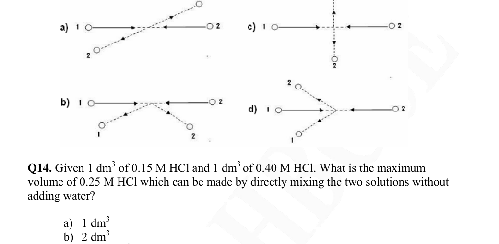
Topic: Conservation of Momentum Metodi: Conservation of Momentum Competenze: Diagrammatic Reasoning Objects: Ball Fonte: Testo (PDF) — p.4
Due palle identiche (1 e 2) si schiantano su una superficie senza attrito. La collisione può essere o non è elastica. Quale delle due opinioni è impossibile?
Quesito 13
Topic: Conservation of Momentum Metodi: Conservation of Momentum Competenze: Diagrammatic Reasoning Objects: Ball Fonte: Testo (PDF) — p.4
Given of M HCl and of M HCl. What is the maximum volume of M HCl which can be made by directly mixing the two solutions without adding water?
- (a)
- (b)
- (c)
- (d)
Topic: Chemistry Metodi: Physical Modeling Competenze: Unit Conversion Objects: — Fonte: Testo (PDF) — p.4
Date di M HCl e di M HCl. Qual è il volume massimo di M HCl che può essere prodotto mescolando direttamente le due soluzioni senza aggiungere acqua?
- (a)
- (b)
- (c)
- (d)
Topic: Chemistry Metodi: Physical Modeling Competenze: Unit Conversion Objects: — Fonte: Testo (PDF) — p.4
The inflammatory response is triggered whenever body tissues are injured. E.g. it occurs in response to physical trauma (a blow), intense heat and irritating chemicals as well as infection by viruses, fungi and bacteria. Arrange the major events involved in the inflammatory process in the correct order as they occur in the body.
i. Mast cells secrete histamine and cytokines. ii. Phagocytosis by monocytes. iii. Cytokines attract neutrophils and monocytes to injured site. iv. Tissue injury v. Diapedesis or emigration of neutrophils & monocytes into the area through the capillary. vi. Vasodilation of arterioles & increased capillary permeability causes redness and swelling.
- (a) iv-i-vi-iii-v-ii
- (b) i-iv-v-vi-iii-ii
- (c) iii-v-vi-iii-ii-i
- (d) iv-i-vi-iii-ii-v
Topic: Biology Metodi: Physical Modeling Competenze: Physical Reasoning Objects: — Fonte: Testo (PDF) — p.4
La risposta infiammatoria viene attivata ogni volta che i tessuti del corpo sono danneggiati. E.g. si verifica in risposta a traumi fisici (un colpo), calore intenso e sostanze chimiche irritanti, nonché infezioni da virus, funghi e batteri. Organizzare gli eventi principali coinvolti nel processo infiammatorio nell’ordine corretto in cui si verificano nel corpo.
i. Le cellule di masto secernono istamina e citochine. ii. Fagocitosi da monociti. iii. Le citochine attirano neutrofili e monociti al luogo ferito. iv. Ferimento tissutuale v. Diapedesis o emigrazione di neutrofili e monociti nella zona attraverso i capillari. vi. La vasodilatazione delle arteriole e l’ aumento della permeabilità capillare causano rossore e gonfiore.
- a) iv-i-vi-iii-v-ii
- b) i-iv-v-vi-iii-ii
- c) iii-v-vi-iii-ii-i
- d) iv-i-vi-iii-ii-v
Topic: Biology Metodi: Physical Modeling Competenze: Physical Reasoning Objects: — Fonte: Testo (PDF) — p.4
Baban arrives in your office for genetic counseling. Baban’s brother Tapan dies at a young age from a hereditary Tay-Sach’s disease. Both he and his sister Suman are unaffected. What is the chance of Suman being a carrier of this disease?
- (a) 1/4
- (b) 2/3
- (c) 1/3
- (d) 1/9
Topic: Biology, Mathematics Metodi: Physical Modeling Competenze: Physical Reasoning Objects: — Fonte: Testo (PDF) — p.5
Baban arriva nel tuo ufficio per una consulenza genetica. Il fratello di Baban, Tapan, muore a giovane età di una malattia ereditaria di Tay-Sach. Sia lui che sua sorella Suman non sono colpiti. Qual è la probabilità che Suman sia portatore di questa malattia?
- (a) 1/4
- (b) 2/3
- (c) 1/3
- (d) 1/9
Topic: Biology, Mathematics Metodi: Physical Modeling Competenze: Physical Reasoning Objects: — Fonte: Testo (PDF) — p.5
In the question above, if Baban’s son Amar and Suman’s daughter Asha are married to each other, and are expecting their first child. What is the chance that the child would have Tay-Sach’s disease?
- (a) 1/4
- (b) 1/9
- (c) 1/72
- (d) 1/36
Topic: Biology, Mathematics Metodi: Physical Modeling Competenze: Physical Reasoning Objects: — Fonte: Testo (PDF) — p.5
Nella domanda sopra, se il figlio di Baban Amar e la figlia di Suman Asha sono sposati tra loro e stanno aspettando il loro primo figlio. Qual è la probabilità che il bambino abbia la malattia di Tay-Sach?
- (a) 1/4
- (b) 1/9
- (c) 1/72
- (d) 1/36
Topic: Biology, Mathematics Metodi: Physical Modeling Competenze: Physical Reasoning Objects: — Fonte: Testo (PDF) — p.5
Four masses are located as shown in the figure. Acceleration due to gravity is same everywhere. What is the position of centre of gravity for the system?
Quesito 18
- (a) 2m
- (b) 2.5m
- (c) 3m
- (d) 2.7m
Topic: Rigid Body Statics Metodi: Physical Modeling Competenze: Physical Reasoning Objects: — Fonte: Testo (PDF) — p.5
Quattro masse sono localizzate come mostrato nella figura. L’accelerazione dovuta alla gravità è uguale ovunque. Qual è la posizione del centro di gravità del sistema?
Quesito 18
- (a) 2m
- (b) 2.5m
- (c) 3m
- (d) 2.7m
Topic: Rigid Body Statics Metodi: Physical Modeling Competenze: Physical Reasoning Objects: — Fonte: Testo (PDF) — p.5
Calculate the mass of Lithium that contains same number of atoms as present in 8g of Magnesium. Atomic masses of Lithium and magnesium are 7 and 24 respectively.
- (a) 8g
- (b) 3g
- (c) 7g
- (d) 2.3g
Topic: Chemistry Metodi: Physical Modeling Competenze: Unit Conversion Objects: — Fonte: Testo (PDF) — p.5
Calcolare la massa del litio che contiene lo stesso numero di atomi che è presente in 8 g di magnesio. Le masse atomiche del litio e del magnesio sono rispettivamente 7 e 24.
- (a) 8g
- (b) 3g
- (c) 7g
- (d) 2.3g
Topic: Chemistry Metodi: Physical Modeling Competenze: Unit Conversion Objects: — Fonte: Testo (PDF) — p.5
Which of the following are insoluble in water but will dissolve in aqueous NaOH?
- (a)
- (b)
- (c)
- (d)
Topic: Chemistry Metodi: Physical Modeling Competenze: Physical Reasoning Objects: — Fonte: Testo (PDF) — p.5
Quali dei seguenti sono insolubbili in acqua ma si dissolvono in NaOH acquoso?
- (a)
- (b)
- (c)
- (d)
Topic: Chemistry Metodi: Physical Modeling Competenze: Physical Reasoning Objects: — Fonte: Testo (PDF) — p.5
A large water tank is filled at a constant rate of 10litres/min. It has an outlet of maximum flow of 10 litres/min at the bottom of the tank, but the output is proportional to the water present in the tank at any given time. How will the ‘v’, volume of water content in the tank, change with time?
Quesito 21
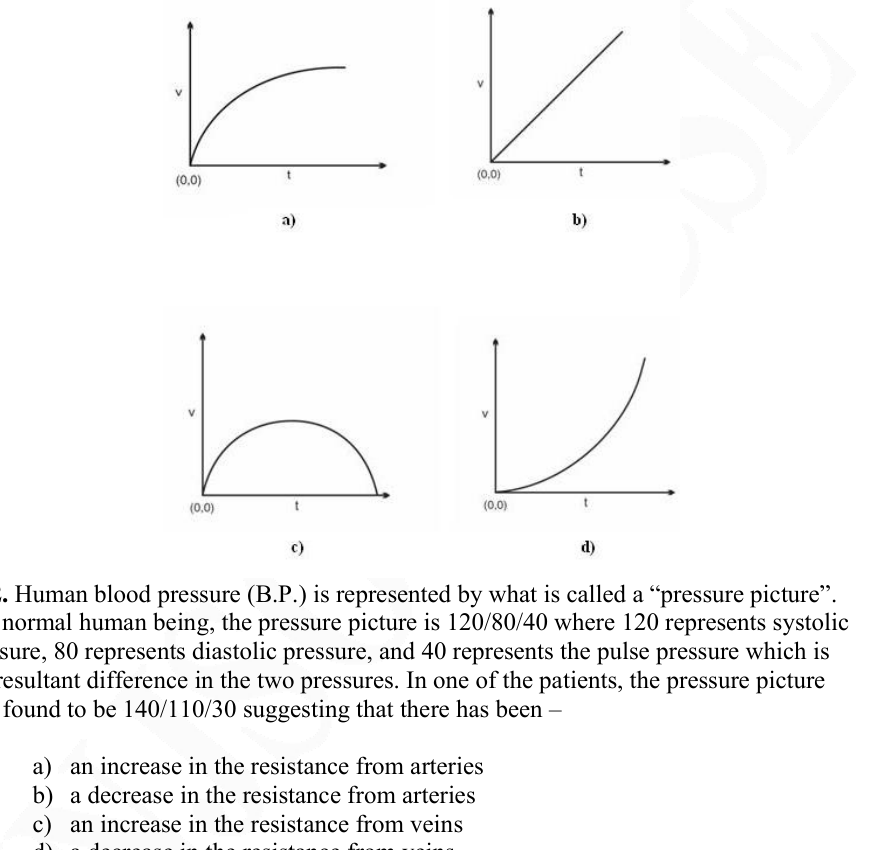
Topic: Mathematics Metodi: Differential Equations Competenze: Mathematical Modeling Objects: Container Fonte: Testo (PDF) — p.6
Un grande serbatoio d’acqua è riempito a velocità costante di 10 litri/min. Ha un’uscita di flusso massimo di 10 litri/min. in fondo al serbatoio, ma la sua uscita è proporzionale all’acqua presente nel serbatoio in un determinato momento. Come cambierà il volume di acqua contenuta nel serbatoio con il tempo?
Quesito 21
Topic: Mathematics Metodi: Differential Equations Competenze: Mathematical Modeling Objects: Container Fonte: Testo (PDF) — p.6
Human blood pressure (B.P.) is represented by what is called a “pressure picture”. In a normal human being, the pressure picture is 120/80/40 where 120 represents systolic pressure, 80 represents diastolic pressure, and 40 represents the pulse pressure which is the resultant difference in the two pressures. In one of the patients, the pressure picture was found to be 140/110/30 suggesting that there has been —
- (a) an increase in the resistance from arteries
- (b) a decrease in the resistance from arteries
- (c) an increase in the resistance from veins
- (d) a decrease in the resistance from veins
Topic: Biology Metodi: Physical Modeling Competenze: Physical Reasoning Objects: — Fonte: Testo (PDF) — p.6
La pressione sanguigna umana (BP) è rappresentata da ciò che si chiama “immagine della pressione”. In un essere umano normale, la pressione è di 120/80/40 dove 120 rappresenta la pressione sistolica, 80 rappresenta la pressione diastolica e 40 rappresenta la pressione del polso che è la differenza risultante nelle due pressioni. In uno dei pazienti, la pressione è stata rilevata a 140/110/ 30, suggerendo che vi è stato un
- a) un aumento della resistenza delle arterie
- (b) una diminuzione della resistenza delle arterie
- (c) un aumento della resistenza delle vene
- (d) una diminuzione della resistenza delle vene
Topic: Biology Metodi: Physical Modeling Competenze: Physical Reasoning Objects: — Fonte: Testo (PDF) — p.6
Which of the following will be helpful in studying the details of surface texture of hair?
- (a) Binocular microscope
- (b) Scanning Electron Microscope
- (c) Transmission Electron Microscope
- (d) Phase-Contrast Microscope
Topic: Biology Metodi: Physical Modeling Competenze: Physical Reasoning Objects: — Fonte: Testo (PDF) — p.6
Quale delle seguenti informazioni sarà utile per studiare i dettagli della struttura della superficie dei capelli?
- a) Microscopio binocolare
- b) Microscopio elettronico di scansione
- (c) Microscopio elettronico di trasmissione
- (d) Microscopio a contrasto di fase
Topic: Biology Metodi: Physical Modeling Competenze: Physical Reasoning Objects: — Fonte: Testo (PDF) — p.6
Increase in pressure shifts the equilibrium of the reaction
- (a) to produce more
- (b) to produce more
- (c) to reduce the temperature of the reaction
- (d) to produce more
Topic: Chemistry Metodi: Physical Modeling Competenze: Physical Reasoning Objects: — Fonte: Testo (PDF) — p.7
L’aumento della pressione cambia l’equilibrio della reazione
- (a) to produce more
- b) per produrre più
- c) ridurre la temperatura della reazione
- (d) to produce more
Topic: Chemistry Metodi: Physical Modeling Competenze: Physical Reasoning Objects: — Fonte: Testo (PDF) — p.7
A solution containing + NaOH requires 300 ml of 0.1N HCl using phenolphthalein indicator. Methyl orange is then added to the above titrated solution and a further 25 ml of 0.2 N HCl is required. What is the amount of NaOH present in the solution?
- (a) 0.8 g
- (b) 1.0 g
- (c) 1.5 g
- (d) 2.0 g
Topic: Chemistry Metodi: Physical Modeling Competenze: Unit Conversion Objects: — Fonte: Testo (PDF) — p.7
Una soluzione contenente + NaOH richiede 300 ml di 0,1 N HCl utilizzando un indicatore di fenolftalaina. Si aggiunge quindi un arancione metile alla soluzione titratata di cui sopra e si richiede un ulteriore 25 ml di 0,2 N HCl. Qual è la quantità di NaOH presente nella soluzione?
- (a) 0.8 g
- (b) 1.0 g
- (c) 1.5 g
- (d) 2.0 g
Topic: Chemistry Metodi: Physical Modeling Competenze: Unit Conversion Objects: — Fonte: Testo (PDF) — p.7
When a ray of white light enters a prism, it begins to spread out into rainbow colours (Fig.1).
Quesito 26
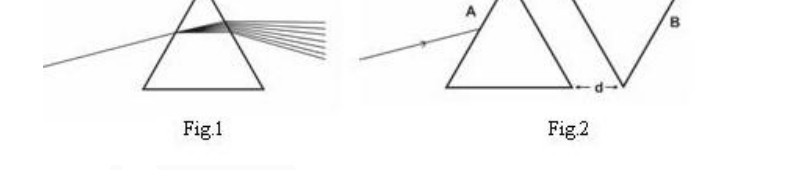
An inverted prism is brought close to this prism as shown in the Fig.2, Both the prisms are made of same material. If a ray of white light is incident on surface A and “d” is made zero then output from surface “B” will be:
- (a) white light.
- (b) rainbow colours which are converging.
- (c) rainbow colours which are spreading out.
- (d) no light comes out from surface B.
Topic: Geometric Optics Metodi: Ray Tracing Competenze: Diagrammatic Reasoning Objects: Prism Fonte: Testo (PDF) — p.7
Quando un raggio di luce bianca entra in un prisma, inizia a diffondersi in colori arcobaleno (Fig. 1).
Quesito 26
Un prisma invertito viene avvicinato a questo prisma come mostrato nella figura 2. Se un raggio di luce bianca incide sulla superficie A e “d” diventa zero, la produzione dalla superficie “B” sarà:
- a) luce bianca.
- b) colori dell’arcobaleno che convergono.
- (c) colori arcobaleno che si diffondono.
- (d) nessuna luce esce dalla superficie B.
Topic: Geometric Optics Metodi: Ray Tracing Competenze: Diagrammatic Reasoning Objects: Prism Fonte: Testo (PDF) — p.7
Which of the following oxides is an acid anhydride?
- (a)
- (b)
- (c) CO
- (d) Red lead
Topic: Chemistry Metodi: Physical Modeling Competenze: Physical Reasoning Objects: — Fonte: Testo (PDF) — p.7
Quale degli ossidi seguenti è un anhidruro acido?
- (a)
- (b)
- (c) CO
- d) Piombo rosso
Topic: Chemistry Metodi: Physical Modeling Competenze: Physical Reasoning Objects: — Fonte: Testo (PDF) — p.7
In dispersive materials,
- (a) the angle of refraction for a light ray depends on the wavelength of light
- (b) the angle of refraction for a light ray does not depend on the wavelength of light
- (c) the angle of reflection from the surface of the material does not depend on the wavelength of light
- (d) Both (a) and (c) hold true.
Topic: Geometric Optics Metodi: Snell’s Law Competenze: Physical Reasoning Objects: — Fonte: Testo (PDF) — p.8
in materiali dispersivi,
- a) l’angolo di rifrazione di un raggio luminoso dipende dalla lunghezza d’onda della luce
- b) l’angolo di rifrazione di un raggio di luce non dipende dalla lunghezza d’onda della luce
- l’angolo di riflessione della superficie del materiale non dipende dalla lunghezza d’onda della luce
- (d) Entrambe le lettere a) e c) sono valide.
Topic: Geometric Optics Metodi: Snell’s Law Competenze: Physical Reasoning Objects: — Fonte: Testo (PDF) — p.8
There are two tracks A and B as shown in the figure. The direction of gravity is also shown in the figure.
Quesito 29
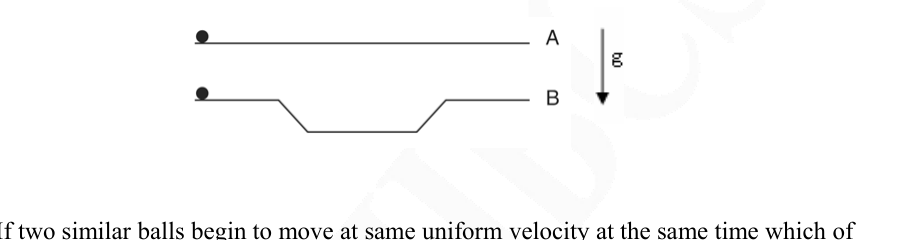
If two similar balls begin to move at same uniform velocity at the same time which of the two balls will reach the end of the track faster?
- (a) Ball on track A
- (b) Ball on track B
- (c) They will reach on the same time
- (d) Cannot decide by the data given.
Topic: Newtonian Mechanics Metodi: Physical Modeling Competenze: Diagrammatic Reasoning Objects: Ball Fonte: Testo (PDF) — p.8
Ci sono due tracce A e B come mostrato nella figura. La direzione della gravità è anche mostrata nella figura.
Quesito 29
Se due palle simili iniziano a muoversi alla stessa velocità uniforme allo stesso tempo, quale delle due palle raggiungerà la fine della pista più velocemente?
- a) palla in pista A
- b) palla sulla pista B
- (c) Arriveranno nello stesso momento
- d) Non può decidere in base ai dati forniti.
Topic: Newtonian Mechanics Metodi: Physical Modeling Competenze: Diagrammatic Reasoning Objects: Ball Fonte: Testo (PDF) — p.8
A human DNA molecule that was 6800Å long was cut into 5 equal sized pieces using molecular scissors. How many nucleotides were present in each of the cut pieces?
- (a) 800 nucleotides
- (b) 400 nucleotides
- (c) 200 nucleotides
- (d) 1360 nucleotides
Topic: Biology Metodi: Physical Modeling Competenze: Unit Conversion Objects: — Fonte: Testo (PDF) — p.8
Una molecola di DNA umana di 6800Å di lunghezza è stata tagliata in 5 pezzi di dimensioni uguali utilizzando forbici molecolari. Quanti nucleotidi erano presenti in ciascuna delle pezzette tagliate?
- a) 800 nucleotidi
- b) 400 nucleotidi
- c) 200 nucleotidi
- d) 1360 nucleotidi
Topic: Biology Metodi: Physical Modeling Competenze: Unit Conversion Objects: — Fonte: Testo (PDF) — p.8
The relationship between respiration and photosynthesis is truly intricate. What will be the effect on the number of mitochondria and chloroplasts in a plant species occurring in higher altitude as compared to the same plant species in lower altitudes?
- (a) number of mitochondria and number of chloroplasts will remain unchanged
- (b) number of mitochondria in high altitude variety will be more
- (c) number of chloroplasts in high altitude variety will be more
- (d) both number of mitochondria and number of chloroplasts will be less in high altitude variety
Topic: Biology Metodi: Physical Modeling Competenze: Physical Reasoning Objects: — Fonte: Testo (PDF) — p.8
La relazione tra respirazione e fotosintesi è davvero complessa. Qual è l’effetto sul numero di mitocondri e di cloroplasti in una specie vegetale che si verificano ad altitudini più elevate rispetto alle stesse specie vegetali a altitudini più basse?
- (a) il numero di mitocondrie e il numero di cloroplasti rimarranno invariati
- (b) il numero di mitocondrie in varietà ad alta quota sarà maggiore
- (c) il numero di cloroplasti in alta altitudine sarà maggiore
- (d) sia il numero di mitocondrie che il numero di cloroplasti saranno inferiori in altitudini elevate
Topic: Biology Metodi: Physical Modeling Competenze: Physical Reasoning Objects: — Fonte: Testo (PDF) — p.8
A radioactive nuclide has a half life of 8 hours. Half life is the time in which 50 % of the nuclei disintegrate. The fraction of the nuclide which will disintegrate in 32 hours will be:
- (a) 0.062
- (b) 0.75
- (c) 0.875
- (d) 0.938
Topic: Nuclear & Particle Physics Metodi: Radioactive Decay Law Competenze: Physical Reasoning Objects: Nucleus Fonte: Testo (PDF) — p.9
Un nuclido radioattivo ha una semivita’ di 8 ore. La mezza vita è il tempo in cui il 50% dei nuclei si disintegra. La frazione del nuclido che si disintegra in 32 ore sarà:
- (a) 0.062
- (b) 0.75
- (c) 0.875
- (d) 0.938
Topic: Nuclear & Particle Physics Metodi: Radioactive Decay Law Competenze: Physical Reasoning Objects: Nucleus Fonte: Testo (PDF) — p.9
If length is increased by 20% and width is decreased by 20% then, which of the following is correct:
| Perimeter | Area | |
|---|---|---|
| a) | Cannot say | Increases by 4% |
| b) | Increases by 4% | Cannot say |
| c) | Increases by 4% | Decreases by 4% |
| d) | Cannot say | Decreases by 4% |
Topic: Mathematics Metodi: Physical Modeling Competenze: Mathematical Modeling Objects: — Fonte: Testo (PDF) — p.9
Se la lunghezza è aumentata del 20% e la larghezza diminuita del 20%, quale di questi elementi è corretto:
Perimetro Area |---|---|---|
Non posso dire # # che aumenterà del 4%
B) # Aumenta del 4% # Non posso dirlo
# C) # Aumenta del 4% # # diminuisce del 4%
Non posso dire # # diminuisce del 4%
Topic: Mathematics Metodi: Physical Modeling Competenze: Mathematical Modeling Objects: — Fonte: Testo (PDF) — p.9
The alimentary canal of insects consists of mouth, pharynx, oesophagus, crop, proventriculus, gizzard and hindgut. In insects and birds, the gizzard helps in grinding the food. Select the statements that most accurately compare the gizzards of the bird and of insect.
i. The gizzard of the bird contains gravel and the gizzard of insect have chitinous teeth. ii. The gizzard of the bird is muscular but that of the insect is devoid of muscles. iii. The gizzard in both cases is muscular. iv. The gizzard of bird bears bristles which are absent in the gizzard of insect.
- (a) i and iii
- (b) i and ii
- (c) ii and iv
- (d) iii and iv
Topic: Biology Metodi: Physical Modeling Competenze: Physical Reasoning Objects: — Fonte: Testo (PDF) — p.9
Il canale alimentare degli insetti è costituito da bocca, faringe, esofago, coltura, proventricolo, guizzardo e intestino posteriore. In insetti e uccelli, il guigardo aiuta a mollare il cibo. Scegli le affermazioni che confrontano con la massima precisione le scaglie dell’uccello e dell’insetto.
i. Il ghiaccio dell’uccello contiene ghiaia e il ghiaccio dell’insetto ha denti chitini. ii. Il gizzardo dell’uccello è muscoloso, ma quello dell’insetto è privo di muscoli. iii. Il gizzardo in entrambi i casi è muscolare. iv. Il guinzardello degli uccelli porta le svelte che non sono presenti nel guinzardello degli insetti.
- a) i e iii
- b) i e ii
- c) ii e iv
- d) iii e iv
Topic: Biology Metodi: Physical Modeling Competenze: Physical Reasoning Objects: — Fonte: Testo (PDF) — p.9
In a room there are four objects - a wooden dish, steel dish, glass dish and a copper dish. If a fire is lit in the room so that it burns at 300 degrees centigrade, and is equidistant from all the four dishes, then after a long time the dishes can be listed in the increasing order of temperature. Which is the correct order of temperature of dishes?
- (a) wooden dish > steel dish > glass dish > copper dish
- (b) steel dish > copper dish > glass dish > wooden dish
- (c) copper dish > steel dish > glass dish > wooden dish
- (d) none of the above
Topic: Thermodynamics Metodi: Physical Modeling Competenze: Physical Reasoning Objects: — Fonte: Testo (PDF) — p.9
In una stanza ci sono quattro oggetti: un piatto di legno, un piatto di acciaio, un piatto di vetro e un piatto di rame. Se nel locale si accende un fuoco che brucia a 300 gradi centigradi e si trova a uguale distanza da tutti e quattro i piatti, dopo un lungo periodo i piatti possono essere elencati nell’ordine crescente della temperatura. Qual è l’ordine corretto di temperatura dei piatti?
- a) piatto di legno > piatto di acciaio > piatto di vetro > piatto di rame
- b) piatto in acciaio > piatto in rame > piatto in vetro > piatto in legno
- c) piatto di rame > piatto di acciaio > piatto di vetro > piatto di legno
- (d) nessuna delle disposizioni di cui sopra
Topic: Thermodynamics Metodi: Physical Modeling Competenze: Physical Reasoning Objects: — Fonte: Testo (PDF) — p.9
Which of the following is correct? (Figures not to be scaled). The focal point of the lens is f and point c is equal to 2f.
Quesito 36
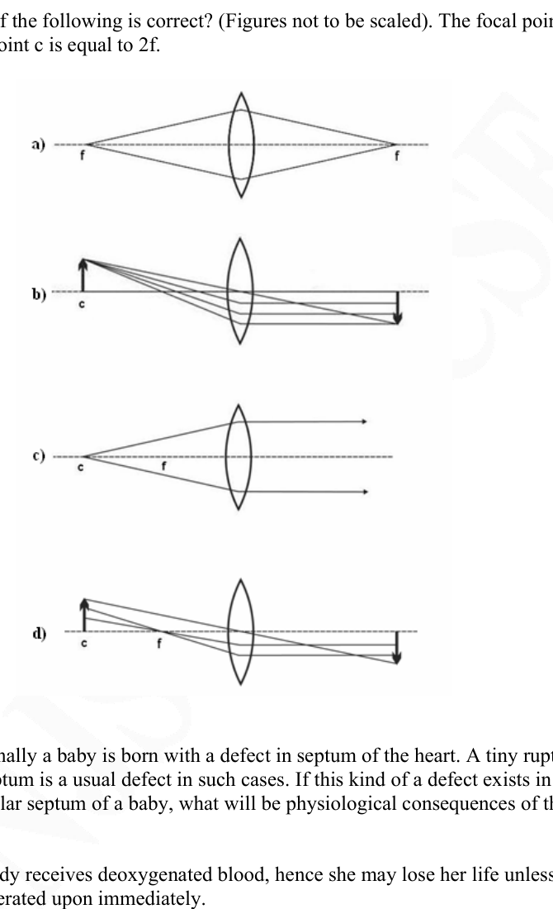
Topic: Geometric Optics Metodi: Thin Lens & Mirror Equation Competenze: Diagrammatic Reasoning Objects: Lens Fonte: Testo (PDF) — p.10
Quale di queste parole è corretta? (Figure da non scalare). Il punto focale della lente è f e il punto c è uguale a 2f.
Quesito 36
Topic: Geometric Optics Metodi: Thin Lens & Mirror Equation Competenze: Diagrammatic Reasoning Objects: Lens Fonte: Testo (PDF) — p.10
Occasionally a baby is born with a defect in septum of the heart. A tiny rupture, or a hole in the septum is a usual defect in such cases. If this kind of a defect exists in the inter- ventricular septum of a baby, what will be physiological consequences of this defect?
- (a) Body receives deoxygenated blood, hence she may lose her life unless operated upon immediately.
- (b) So long as baby is calm and quiet she remains normal, however on exertion or crying her skin turns bluish and baby gets exhausted.
- (c) Heart cannot pump blood effectively, so blood does not reach all the tissues.
- (d) Since valves are normal, systemic as well as pulmonary circulations are normal but blood pressure is low.
Topic: Biology Metodi: Physical Modeling Competenze: Physical Reasoning Objects: — Fonte: Testo (PDF) — p.10
Occasionalmente un bambino nasce con un difetto del setto del cuore. Una piccola rottura, o un buco nel setto, è un difetto comune in tali casi. Se questo tipo di difetto esiste nel setto interventricolare di un bambino, quali saranno le conseguenze fisiologiche di questo difetto?
- (a) Il corpo riceve sangue deossigenato, quindi può perdere la vita se non viene subito operato.
- (b) Finché il bambino è calmo e tranquillo rimane normale, tuttavia, con sforzo o pianto la sua pelle diventa azzurra e il bambino si esaurisce.
- (c) Il cuore non può pompare il sangue efficacemente, quindi il sangue non raggiunge tutti i tessuti.
- (d) Poiché le valvole sono normali, la circolazione sistemica e pulmonare sono normali ma la pressione sanguigna è bassa.
Topic: Biology Metodi: Physical Modeling Competenze: Physical Reasoning Objects: — Fonte: Testo (PDF) — p.10
50 cm³ of 1.5 M NaOH is titrated against 2M HCl. The pH of the reaction system after the addition of 35ml of HCl will be:
- (a) 0.084
- (b) 1.23
- (c) 12.77
- (d) 7.95
Topic: Chemistry Metodi: Physical Modeling Competenze: Significant Figures Objects: — Fonte: Testo (PDF) — p.11
50 cm3 di 1,5 M di NaOH sono titolati contro 2 M di HCl. Il pH del sistema di reazione dopo l’aggiunta di 35 ml di HCl sarà:
- (a) 0.084
- (b) 1.23
- (c) 12.77
- (d) 7.95
Topic: Chemistry Metodi: Physical Modeling Competenze: Significant Figures Objects: — Fonte: Testo (PDF) — p.11
The elements most likely to conduct electricity are the ones where electrons are not tightly bound to the nucleus. The trend for electrical conductivity in the following is:
- (a) Li> Na> S> Ne
- (b) S> Li> Na> Ne
- (c) Ne> Na> Li> S
- (d) Na> Li> S> Ne
Topic: Chemistry Metodi: Physical Modeling Competenze: Physical Reasoning Objects: — Fonte: Testo (PDF) — p.11
Gli elementi che conducono l’elettricità sono quelli in cui gli elettroni non sono strettamente legati al nucleo. La tendenza per la conducibilità elettrica è la seguente:
- (a) Li> Na> S> Ne
- (b) S> Li> Na> Ne
- (c) Ne> Na> Li> S
- (d) Na> Li> S> Ne
Topic: Chemistry Metodi: Physical Modeling Competenze: Physical Reasoning Objects: — Fonte: Testo (PDF) — p.11
According to Darwin’s theory of evolution, which of the following is a necessary condition (pre-requisite) for natural selection?
- (a) variation among individuals of a population in some heritable characteristic
- (b) variation in habitat within the population of species
- (c) variation in environmental conditions that suit the individual
- (d) all of the above
Topic: Biology Metodi: Physical Modeling Competenze: Physical Reasoning Objects: — Fonte: Testo (PDF) — p.11
Secondo la teoria dell’evoluzione di Darwin, quale delle seguenti condizioni è necessaria (pre-requisito) per la selezione naturale?
- a) variazione tra gli individui di una popolazione in alcune caratteristiche ereditarie
- b) variazione dell’habitat all’interno della popolazione delle specie
- c) variazione delle condizioni ambientali adatte all’individuo
- d) tutti i suddetti
Topic: Biology Metodi: Physical Modeling Competenze: Physical Reasoning Objects: — Fonte: Testo (PDF) — p.11
If earth were to stop spinning then your weight on equator will be
- (a) heavier by around 0.5%
- (b) heavier by around 5%
- (c) less by around 0.5 %
- (d) less by around 5%
Topic: Gravitation Metodi: Newton’s Law of Gravitation Competenze: Estimation & Approximation Objects: Planet Fonte: Testo (PDF) — p.11
Se la Terra smette di ruotare, il tuo peso sull’equatore sarà
- a) più pesante di circa lo 0,5%
- b) più pesante di circa il 5%
- c) meno di circa 0,5%
- d) inferiore di circa il 5%
Topic: Gravitation Metodi: Newton’s Law of Gravitation Competenze: Estimation & Approximation Objects: Planet Fonte: Testo (PDF) — p.11
A dwarf pea plant is treated with a hormone gibberellic acid. It was found that the plant height increases rapidly. Thus it was confirmed that gibberellic acid brings about increase in the height of the plant. If this treated plant is crossed with normal dwarf pea plant, what kind of progeny would you expect?
- (a) All tall
- (b) All dwarf
- (c) 50% tall and 50% dwarf
- (d) 75% tall and 25% dwarf
Topic: Biology Metodi: Physical Modeling Competenze: Physical Reasoning Objects: — Fonte: Testo (PDF) — p.11
Una pianta di piselli nano viene trattata con un acido gibberellico ormonale. Si è scoperto che la pianta aumenta rapidamente di altezza. Si è quindi confermato che l’acido gibberellico provoca un aumento dell’altezza della pianta. Se questa pianta trattata è incrociata con una pianta di piselli nani normali, che genere di discendenza ci si aspetterebbe?
- a) Tutte alte
- (b) Tutti nanni
- c) Alti del 50% e nani del 50%
- d) Alti del 75% e nani del 25%
Topic: Biology Metodi: Physical Modeling Competenze: Physical Reasoning Objects: — Fonte: Testo (PDF) — p.11
The volume occupied by 1.6 g of oxygen at NTP conditions is:
- (a)
- (b)
- (c)
- (d)
Topic: Chemistry Metodi: Ideal Gas Law Competenze: Unit Conversion Objects: Gas Fonte: Testo (PDF) — p.11
Il volume occupato da 1,6 g di ossigeno in condizioni di NTP è:
- (a)
- (b)
- (c)
- (d)
Topic: Chemistry Metodi: Ideal Gas Law Competenze: Unit Conversion Objects: Gas Fonte: Testo (PDF) — p.11
A perfectly spherical elastic balloon of 0.2 meter diameter was filled with hydrogen gas at sea level. What will be its volume at an altitude where pressure is 0.65 atm. What will be the diameter of the balloon?
- (a) 0.20 m
- (b) 0.23 m
- (c) 0.10 m
- (d) 0.32 m
Topic: Chemistry Metodi: Ideal Gas Law Competenze: Unit Conversion Objects: Gas, Sphere Fonte: Testo (PDF) — p.12
Un pallone elastico perfettamente sferico di 0,2 metri di diametro è stato riempito di gas idrogeno al livello del mare. Qual sarà il suo volume ad un’altitudine in cui la pressione è di 0,65 atm. Qual sarà il diametro del palloncino?
- (a) 0.20 m
- (b) 0.23 m
- (c) 0.10 m
- (d) 0.32 m
Topic: Chemistry Metodi: Ideal Gas Law Competenze: Unit Conversion Objects: Gas, Sphere Fonte: Testo (PDF) — p.12
A colourless crystalline solid ‘B’ dissolved easily in water. On addition of dilute HCl to the aqueous solution of ‘B’, no change was observed. When NaOH was added to the aqueous solution of ‘B’, a white ppt was obtained that dissolved in excess, giving a colourless solution. ‘B’ is/
- (a)
- (b)
- (c)
- (d)
Topic: Chemistry Metodi: Physical Modeling Competenze: Physical Reasoning Objects: — Fonte: Testo (PDF) — p.12
Un solido cristallino incolore “B” facilmente dissoluto in acqua. Dopo l’aggiunta di HCl diluito alla soluzione acquosa di “B”, non è stata osservata alcuna modifica. Quando il NaOH è stato aggiunto alla soluzione acquosa di “B”, è stato ottenuto un ppt bianco che si è dissolto in eccesso, dando una soluzione incolore. ‘B’ is/
- (a)
- (b)
- (c)
- (d)
Topic: Chemistry Metodi: Physical Modeling Competenze: Physical Reasoning Objects: — Fonte: Testo (PDF) — p.12
A trolley moves from point P to Q along a track, as shown in the figure. At point P, its potential energy is 50 kJ less than at point P. At point P, the trolley has kinetic energy 5 kJ. Between P and Q, the work done against friction is 10 kJ. What is the kinetic energy at point Q?
Quesito 46
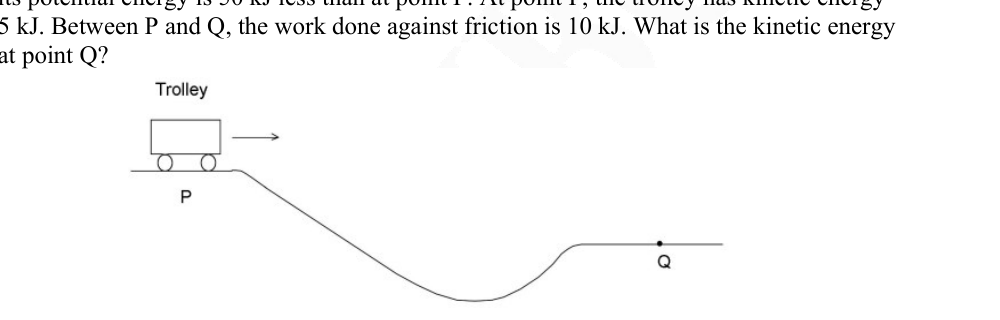
- (a) 35 kJ
- (b) 45 kJ
- (c) 55 kJ
- (d) 65 kJ
Topic: Conservation of Energy Metodi: Conservation of Energy Competenze: Physical Reasoning Objects: Cart Fonte: Testo (PDF) — p.12
Un carrello si sposta dal punto P a Q lungo una pista, come mostra la figura. Al punto P, la sua energia potenziale è di 50 kJ inferiore a quella del punto P. Al punto P, il carrello ha energia cinetica di 5 kJ. Tra P e Q, il lavoro fatto contro l’attrito è di 10 kJ. Qual è l’energia cinetica al punto Q?
Quesito 46
- (a) 35 kJ
- (b) 45 kJ
- (c) 55 kJ
- (d) 65 kJ
Topic: Conservation of Energy Metodi: Conservation of Energy Competenze: Physical Reasoning Objects: Cart Fonte: Testo (PDF) — p.12
Which of the following plant groups lack lignified cell walls in its cellular structure?
- (a) Bryophytes
- (b) Halophytes
- (c) Pteridophytes
- (d) Spermatophytes
Topic: Biology Metodi: Physical Modeling Competenze: Physical Reasoning Objects: — Fonte: Testo (PDF) — p.12
Quale dei seguenti gruppi di piante non ha le pareti cellulari lignificate nella sua struttura cellulare?
- a) Bryophytes
- b) Alofiti
- (c) Pteridofiti
- d) Spermatofiti
Topic: Biology Metodi: Physical Modeling Competenze: Physical Reasoning Objects: — Fonte: Testo (PDF) — p.12
Which of the following is not a simple harmonic motion?
- (a) Earth moving around Sun
- (b) pendulum
- (c) oscillating mass attached to a spring
- (d) vibrating string of guitar
Topic: Oscillations & Waves Metodi: Simple Harmonic Motion Analysis Competenze: Physical Reasoning Objects: Pendulum, Spring, Planet, Star Fonte: Testo (PDF) — p.12
Quale di queste non è un semplice movimento armonico?
- (a) La Terra che si muove attorno al Sole
- b) pendolo
- (c) massa oscillante attaccata a una molla
- d) stringhe vibratrici di chitarra
Topic: Oscillations & Waves Metodi: Simple Harmonic Motion Analysis Competenze: Physical Reasoning Objects: Pendulum, Spring, Planet, Star Fonte: Testo (PDF) — p.12
Gas liquid chromatography cannot be used to separate components which
- (a) are volatile
- (b) are non - volatile
- (c) are liquids
- (d) vaporize without decomposition
Topic: Chemistry Metodi: Physical Modeling Competenze: Physical Reasoning Objects: — Fonte: Testo (PDF) — p.13
La cromatografia liquida a gas non può essere utilizzata per separare i componenti che
- a) sono volatili
- b) non volatili
- c) sono liquidi
- d) vaporizzare senza decomposizione
Topic: Chemistry Metodi: Physical Modeling Competenze: Physical Reasoning Objects: — Fonte: Testo (PDF) — p.13
We know that the total amount of DNA from mitochondria and chloroplast will be one-third the quantity of nuclear DNA. It has been found that on an average the chloroplast DNA content is more than the mitochondrial DNA. This is because –
- (a) mitochondria exhibit polyploidy only in meristems while chloroplasts show polyploidy even during cell maturation
- (b) the average number of mitochondria in a plant are much less than the number of chloroplasts
- (c) in general chloroplasts divide much more frequently than the mitochondria
- (d) all of the above
Topic: Biology Metodi: Physical Modeling Competenze: Physical Reasoning Objects: — Fonte: Testo (PDF) — p.13
Sappiamo che la quantità totale di DNA proveniente da mitocondrie e cloroplasti sarà un terzo della quantità di DNA nucleare. Si è scoperto che in media il contenuto del DNA del cloroplast è superiore al DNA mitocondriale. Questo è perché
- (a) i mitocondri presentano una poliploidità solo nei meristemi mentre i cloroplasti mostrano una poliploidità anche durante la maturazione cellulare
- b) il numero medio di mitocondrie in una pianta è molto inferiore al numero di cloroplasti
- (c) in generale i cloroplasti si dividono molto più frequentemente delle mitocondrie
- d) tutti i suddetti
Topic: Biology Metodi: Physical Modeling Competenze: Physical Reasoning Objects: — Fonte: Testo (PDF) — p.13
Which of the following statement is true regarding the Kirchoff’s laws?
- (a) The junction rule is a statement of conservation of energy and the loop rule is a statement of conservation of charge
- (b) The junction rule as well as the loop rule are statements of conservation of charge.
- (c) The junction rule as well as the loop rule are statements of conservation of energy.
- (d) The junction rule is statement of conservation of charge and the loop rule is a statement of conservation of energy.
Topic: Circuits Metodi: Kirchhoff’s Laws, Conservation Laws Competenze: Physical Reasoning Objects: — Fonte: Testo (PDF) — p.13
Quale delle seguenti affermazioni è vera riguardo alle leggi di Kirchoff?
- a) La regola di intersezione è una dichiarazione di conservazione dell’energia e la regola di ciclo è una dichiarazione di conservazione della carica
- b) La regola di intersezione e la regola di circuito sono dichiarazioni di conservazione della carica.
- (c) La regola di giunzione e la regola del ciclo sono affermazioni di conservazione dell’energia.
- (d) La regola di intersezione è una dichiarazione di conservazione della carica e la regola del ciclo è una dichiarazione di conservazione dell’energia.
Topic: Circuits Metodi: Kirchhoff’s Laws, Conservation Laws Competenze: Physical Reasoning Objects: — Fonte: Testo (PDF) — p.13
You have a large supply of light bulbs and a battery. You start with one light bulb connected to the battery and notice its brightness. You then add one light bulb at a time, each new bulb being added in series to the previous bulbs then
- (a) Brightness of the bulbs will increase
- (b) Current through the bulbs will increase
- (c) Power transferred from the battery will decrease
- (d) Lifetime of the battery will increase
Topic: Circuits Metodi: Equivalent Circuit Reduction Competenze: Physical Reasoning Objects: Battery, Resistor Fonte: Testo (PDF) — p.13
Avete una grande provvista di lampadine e una batteria. Iniziate con una lampadina collegata alla batteria e notate la sua luminosità. Poi si aggiunge una lampadina alla volta, ogni nuova lampadina viene aggiunta in serie alle lampadine precedenti
- (a) Aumenterà la luminosità delle lampadine
- (b) La corrente attraverso le lampadine aumenterà
- (c) La potenza trasferita dalla batteria diminuirà
- (d) La durata della batteria aumenterà
Topic: Circuits Metodi: Equivalent Circuit Reduction Competenze: Physical Reasoning Objects: Battery, Resistor Fonte: Testo (PDF) — p.13
0.1 mole of a weak acid HA and 0.1 mole of its sodium salt are dissolved in water and the solution is made upto 1000 cm³. If , the pH of the solution is:
- (a) 2.4
- (b) 3.70
- (c) 4.74
- (d) 5.00
Topic: Chemistry Metodi: Physical Modeling Competenze: Significant Figures Objects: — Fonte: Testo (PDF) — p.13
0,1 mol di acido HA debole e 0,1 mol di sale di sodio sono sciolti in acqua e la soluzione è preparata fino a 1000 cm3. Se , il pH della soluzione è:
- (a) 2.4
- (b) 3.70
- (c) 4.74
- (d) 5.00
Topic: Chemistry Metodi: Physical Modeling Competenze: Significant Figures Objects: — Fonte: Testo (PDF) — p.13
Stem cells of an adult human being are said to be pluripotent because they have:
- (a) potential to differentiate into cells of any type
- (b) potential to reproduce indefinitely
- (c) potential to differentiate into multiple but not all cell types
- (d) all of the above
Topic: Biology Metodi: Physical Modeling Competenze: Physical Reasoning Objects: — Fonte: Testo (PDF) — p.14
Si dice che le cellule staminali di un essere umano adulto siano pluripotenti perché hanno:
- a) potenziale di differenziazione in cellule di qualsiasi tipo
- b) potenziale di riproduzione indefinita
- c) potenziale per la differenziazione in più tipi di cellule ma non in tutti
- d) tutti i suddetti
Topic: Biology Metodi: Physical Modeling Competenze: Physical Reasoning Objects: — Fonte: Testo (PDF) — p.14
A ray of light is incident on the midpoint of a glass prism surface at an angle of 25.0° with the normal. For the glass, , and the angle of prism is 30.0°. What is the angle of incidence at the glass-to-air surface on the side opposite where the ray entered the prism?
- (a) 14.2°
- (b) 9.8°
- (c) 19.2°
- (d) light will not come out from the other surface
Topic: Geometric Optics Metodi: Snell’s Law Competenze: Physical Reasoning Objects: Prism Fonte: Testo (PDF) — p.14
Un raggio di luce si incide sul punto medio di una superficie di prisma di vetro ad un angolo di 25.0° rispetto al normale. Per il vetro e l’angolo del prisma 30.0°. Qual è l’angolo di incidenza della superficie vetro-aria sul lato opposto dove il raggio entra nel prisma?
- (a) 14.2°
- (b) 9.8°
- (c) 19.2°
- d) la luce non esce dall’altra superficie
Topic: Geometric Optics Metodi: Snell’s Law Competenze: Physical Reasoning Objects: Prism Fonte: Testo (PDF) — p.14
Which of the following has the smallest size?
- (a) Ne
- (b)
- (c)
- (d)
Topic: Chemistry Metodi: Physical Modeling Competenze: Physical Reasoning Objects: — Fonte: Testo (PDF) — p.14
Quale delle seguenti ha la dimensione più piccola?
- (a) Ne
- (b)
- (c)
- (d)
Topic: Chemistry Metodi: Physical Modeling Competenze: Physical Reasoning Objects: — Fonte: Testo (PDF) — p.14
A typical dicot possesses tap root system which has a primary root and many lateral roots and rootlets. Which of the following exhibits meristematic activity responsible for production of lateral roots?
- (a) Vascular cambium
- (b) Pericycle
- (c) Endodermis
- (d) Cork cambium
Topic: Biology Metodi: Physical Modeling Competenze: Physical Reasoning Objects: — Fonte: Testo (PDF) — p.14
Un tipico dicot possiede un sistema radicale di rubinetto che ha una radice primaria e molte radici laterali e rootlet. Qual è l’attività meristematica responsabile della produzione di radici laterali?
- (a) Cambium vascolare
- b) Periciclo
- (c) Endodermi
- d) Cork cambium
Topic: Biology Metodi: Physical Modeling Competenze: Physical Reasoning Objects: — Fonte: Testo (PDF) — p.14
The ionization energy of nitrogen is more than that of oxygen because of:
- (a) Greater attraction of nucleus
- (b) Extra stability of half-filled p-orbitals
- (c) Smaller size of nitrogen atom
- (d) Poor shielding effect
Topic: Chemistry Metodi: Physical Modeling Competenze: Physical Reasoning Objects: — Fonte: Testo (PDF) — p.14
L’energia di ionizzazione dell’azoto è superiore a quella dell’ossigeno a causa di:
- a) maggiore attrattiva del nucleo
- b) Extra stabilità delle orbite p-a metà piena
- c) Dimensioni minori di atomi di azoto
- d) Pochissimo effetto di protezione
Topic: Chemistry Metodi: Physical Modeling Competenze: Physical Reasoning Objects: — Fonte: Testo (PDF) — p.14
A man of mass 100 kg stands on a wood plank of area . What is the pressure exerted on the floor? Assume the area of a human foot to be .
- (a) 500 N
- (b) 25 N
- (c) 50000 N
- (d) 250 N
Topic: Fluid Mechanics Metodi: Hydrostatic Equilibrium Competenze: Unit Conversion Objects: Block Fonte: Testo (PDF) — p.14
Un uomo di 100 kg si trova su una tavola di legno di superficie . Qual è la pressione esercitata sul pavimento? Supponiamo che l’area del piede umano sia .
- (a) 500 N
- (b) 25 N
- (c) 50000 N
- (d) 250 N
Topic: Fluid Mechanics Metodi: Hydrostatic Equilibrium Competenze: Unit Conversion Objects: Block Fonte: Testo (PDF) — p.14
Human heart consisting of auricles and ventricles and muscular valves is an interesting functional system. The valve regulating the flow of impure blood from the right ventricle to the pulmonary artery is a:
- (a) Tricuspid valve
- (b) Semilunar valve
- (c) Aortic valve
- (d) Bicuspid valve
Topic: Biology Metodi: Physical Modeling Competenze: Physical Reasoning Objects: — Fonte: Testo (PDF) — p.15
Il cuore umano, costituito da auriculi e ventriculi e valvole muscolari, è un interessante sistema funzionale. La valvola che regola il flusso di sangue impuro dal ventricolo destro all’arteria polmonare è:
- a) Valvola tricuspida
- b) Valvola semilunar
- (c) Valvola aortica
- d) Valvola bicuspid
Topic: Biology Metodi: Physical Modeling Competenze: Physical Reasoning Objects: — Fonte: Testo (PDF) — p.15
Section B (long questions) — Questions 61 to 68 are of 5 marks each. Marks will also be indicated in the questions if there are more than one part to it.
The human cerebrum is divided into right and left cerebral hemispheres. The outer 2-4mm of the cerebral hemispheres is known as the cerebral cortex. It consists of grey matter.
The left side of the cerebral cortex receives information from and controls movement of the right side of the body and vice-versa. A thick band of axons known as corpus callosum enables the right and left cerebral cortices to communicate. The left cerebral hemisphere is concerned with recognition of faces.
In a particular patient the corpus callosum was surgically removed as a treatment of last resort for the most extreme form of epilepsy in which this occurred as often as 30 minutes. The patient appeared normal after recovery but exhibited a ‘split-brain’ effect.
Answer the following questions using options (Yes/No).
-
The patient is blindfolded and given a comb in the left hand. Then the blindfolded person is asked to locate the comb in a mixture of objects (mirror, ball, pen, etc) with his left hand. Will he succeed? [1]
-
If the doctor asks the blindfolded patient to say what the object was, would he be able to answer? [1]
-
When the doctor asks the blindfolded patient to find the comb in the mixture of objects with his right hand. Would he be successful? [1]
-
When the blindfolded patient is given the comb in right hand and asked to say what the object is, will he be able to answer? [1]
-
If the patient is shown a photograph of a familiar face first in the left field of vision and then in the right field, would he be able to put a name to the face, in either field? [1]
Total 5 marks
Topic: Biology Metodi: Physical Modeling Competenze: Physical Reasoning Objects: — Fonte: Testo (PDF) — p.15
**Sezione B (pieghe domande) ** Le domande da 61 a 68 sono di 5 punti ciascuno. Le domande sono inoltre segnalate se sono costituite da più di una parte.
Il cervello umano è diviso in emisferi cerebrali destri e sinistri. La parte esterna 2-4 mm degli emisferi cerebrali è conosciuta come corteccia cerebrale. È costituito da materia grigia.
Il lato sinistro della corteccia cerebrale riceve informazioni e controlla il movimento del lato destro del corpo e viceversa. Una spessa fascia di assi conosciuta come corpus callosum consente alle corti cerebrali destre e sinistra di comunicare. L’emisfero cerebrale sinistro è coinvolto nel riconoscimento dei volti.
In un particolare paziente il corpus callosum è stato rimosso chirurgicamente come trattamento di ultima istanza per la forma più estrema di epilessia in cui si verificava spesso fino a 30 minuti. Il paziente apparve normale dopo il recupero, ma ha mostrato un effetto di “split-brain”.
Rispondere alle seguenti domande con le opzioni (sì/no).
-
Il paziente è legato gli occhi e gli viene dato un pettine nella mano sinistra. Poi la persona con gli occhi bandati viene chiesto di individuare il pettine in una miscela di oggetti (specchio, palla, penna, ecc.) con la mano sinistra. Riuscirà? [1]
-
Se il medico chiedesse al paziente con gli occhi bandati di dire quale fosse l’oggetto, sarebbe in grado di rispondere? [1]
-
Quando il medico chiede al paziente con gli occhi bandati di trovare il pettine nella miscela di oggetti con la mano destra. Avrebbe successo? [1]
-
Quando al paziente con gli occhi bandati viene dato il pettine nella mano destra e gli viene chiesto di dire quale sia l’oggetto, sarà in grado di rispondere? [1]
-
Se al paziente viene mostrata una fotografia di un viso familiare prima nel campo visivo sinistro e poi nel campo visivo destro, sarebbe in grado di mettere un nome al viso, in entrambi i campi? [1]
Total 5 marchi
Topic: Biology Metodi: Physical Modeling Competenze: Physical Reasoning Objects: — Fonte: Testo (PDF) — p.15
Consider the following hypothetical reaction
and answer the following:
Quesito 62
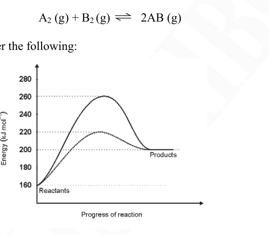
a) Calculate the energy of activation for the forward and backward reactions. [1]
b) Calculate (change in enthalpy) for the reaction. [1]
c) The dotted curve is the reaction path in presence of the catalyst. What is the lowering in activation energy in the presence of the catalyst? [1]
d) What will be the effect of increased pressure on equilibrium of the above reaction? [0.5]
e) What will happen if the temperature is increased (raised) by 10°C? [0.5]
f) State with reason whether the position of equilibrium can be altered using catalyst. [1]
Total 5 marks
Topic: Chemistry, Thermodynamics Metodi: First Law of Thermodynamics Competenze: Diagrammatic Reasoning Objects: Gas Fonte: Testo (PDF) — p.16
Considerate la seguente reazione ipotetica
e rispondono:
Quesito 62
a) Calcolare l’energia di attivazione delle reazioni in avanti e in ritardo. [1]
b) Calcolare (cambiamento di entalpia) per la reazione. [1]
c) La curva puntata è la via di reazione in presenza del catalizzatore. Qual è la diminuzione dell’energia di attivazione in presenza del catalizzatore? [1]
d) Qual è l’effetto dell’aumento della pressione sull’equilibrio della reazione di cui sopra? [0.5]
e) Cosa accadrà se la temperatura è aumentata (alzata) di 10°C? [0.5]
f) Indicare ragionevolmente se la posizione di equilibrio può essere alterata utilizzando il catalizzatore. [1]
Total 5 marchi
Topic: Chemistry, Thermodynamics Metodi: First Law of Thermodynamics Competenze: Diagrammatic Reasoning Objects: Gas Fonte: Testo (PDF) — p.16
a) A bus leaves a stop and accelerates at a constant rate for 5.0 seconds, that this time the bus travels 25 metres. After this the bus travels at a constant speed for 15 seconds. Then the driver notices a red light 18 meters ahead and applies brakes with acceleration ''. Assume that the bus decelerates at a constant rate and comes to a stop sometime later just at the light.
-
What was the initial acceleration of the bus?
-
What was the velocity of the bus after 5 seconds?
-
Calculate ''.
-
How long did the bus brake? [2]
b) Two athletes Usha and Shiney are playing athletic games. Usha is running at a constant velocity towards Shiney who is stationary. When Usha is 12 meters away from Shiney, Shiney starts to accelerate at a constant rate of .
-
What is the minimum velocity with which Usha needs to run in order to just catch up with Shiney?
-
How long does Usha take to catch up with Shiney? [3]
Total 5 marks
Topic: Newtonian Mechanics Metodi: Kinematic Equations Competenze: Mathematical Modeling Objects: — Fonte: Testo (PDF) — p.17
Un autobus lascia una fermata e accelera a velocità costante per 5,0 secondi, che questa volta percorre 25 metri. Dopo questo l’autobus viaggia a velocità costante per 15 secondi. Il conducente nota poi una luce rossa 18 metri avanti e applica i freni con l’accelerazione "". Supponiamo che l’autobus rallenti a un ritmo costante e si ferma qualche volta dopo, proprio alla luce.
-
Qual era l’accelerazione iniziale dell’autobus?
-
Qual era la velocità dell’autobus dopo 5 secondi?
-
Calcolare "".
-
Per quanto tempo l’autobus ha frenato? [2]
Due atleti Usha e Shiney stanno giocando a giochi atletici. Usha corre a velocità costante verso Shiney che è fermo. Quando Usha è a 12 metri da Shiney, Shiney inizia ad accelerare a un ritmo costante di .
-
Qual è la velocità minima con cui Usha deve correre per raggiungere Shiney?
-
Quanto ci vuole per raggiungere Shiney? [3]
Total 5 marchi
Topic: Newtonian Mechanics Metodi: Kinematic Equations Competenze: Mathematical Modeling Objects: — Fonte: Testo (PDF) — p.17
a) Solve:
[2]
b) If ,
write in terms of . [3]
Total 5 marks
Topic: Mathematics Metodi: Physical Modeling Competenze: Mathematical Modeling Objects: — Fonte: Testo (PDF) — p.17
**a) ** Risolvi:
[2]
b) If ,
scrivere in termini di . [3]
Total 5 marchi
Topic: Mathematics Metodi: Physical Modeling Competenze: Mathematical Modeling Objects: — Fonte: Testo (PDF) — p.17
a) A white inorganic solid ‘A’ on heating with dilute HCl gives a solution ‘B’ and gas ‘C’ with smell of rotten eggs. ‘B’ when treated with dilute NaOH gives a white ppt that dissolves in excess NaOH. Solution ‘B’ is soluble in dilute . On strong heating in air, ‘A’ gives a pungent gas ‘D’ and residue ‘E’ that dissolves in water. A dilute solution of ‘E’ gives a white ppt ‘F’ on treatment with solution. Identify A, B, C, D, E, and F. [3]
b) A metal chloride ‘X’, on treatment with in acidic medium gives a black ppt. An aqueous solution of X when treated with a solution of gives a white ppt turning grey in excess . An aqueous solution of ‘X’ when treated with aqueous solution of KI gives a red ppt that dissolves in excess KI giving a colourless solution that is used for the detection of cations ‘Y’. Identify ‘X’ and ‘Y’ with justification. and write all the reactions involved. [2]
Total 5 marks
Topic: Chemistry Metodi: Physical Modeling Competenze: Physical Reasoning Objects: — Fonte: Testo (PDF) — p.18
**a) ** Un solido inorganico bianco “A” riscaldato con HCl diluito dà una soluzione “B” e un gas “C” con odore di uova marcite. “B” quando trattata con NaOH diluito produce un ppt bianco che si dissolve in eccesso di NaOH. La soluzione “B” è solubile in diluito. Con un caldo forte nell’aria, “A” dà un gas pungente “D” e un residuo “E” che si dissolve in acqua. Una soluzione diluita di ” E ” dà una ppt bianca ” F ” al trattamento con soluzione . Identifica A, B, C, D, E e F. [3]
**b) ** Un cloruro metallico “X”, sotto trattamento con in mezzo acido, dà una ppt nera. Una soluzione acquosa di X, trattata con una soluzione di , dà un ppt bianco che diventa grigio in eccesso . Una soluzione acquosa di “X” quando trattata con soluzione acquosa di KI dà un ppt rosso che si dissolve in eccesso di KI dando una soluzione incolore che viene utilizzata per il rilevamento dei cationi “Y”. Indicare “X” e “Y” con giustificazione. e scrivere tutte le reazioni coinvolte. [2]
Total 5 marchi
Topic: Chemistry Metodi: Physical Modeling Competenze: Physical Reasoning Objects: — Fonte: Testo (PDF) — p.18
a) There are two conducting plates A and B kept at a distance of 3 mm. Plate A is +2 Volts and plate B is grounded (0 Volts). An electron begins to move from plate A with an initial velocity of ''. Find velocity '' such that the electron travels up to plate B and when it reaches plate B its velocity is zero. [2]
b) A block of ice weighing 20 gm, at -10°C is mixed with 100 gm water at 10°C, in an insulated flask. What is the amount of water, in the flask, when equilibrium is reached? [3]
Total 5 marks
Topic: Electrostatics, Thermodynamics Metodi: Energy Conservation Method Competenze: Physical Reasoning Objects: Capacitor, Electron, Block Fonte: Testo (PDF) — p.18
**a) ** Ci sono due piastre conduttrici A e B tenute a una distanza di 3 mm. La piastra A è di +2 Volt e la piastra B è a terra (0 Volt). Un elettrone inizia a muoversi dalla piastra A con una velocità iniziale di ''. Trova la velocità '' tale che l’elettrone si sposta fino alla piastra B e quando raggiunge la piastra B la sua velocità è zero. [2]
**b) ** Un blocco di ghiaccio di peso di 20 gm, a -10°C, viene mescolato con 100 gm di acqua a 10°C, in un flacone isolato. Qual è la quantità di acqua nel flacone quando si raggiunge l’equilibrio? [3]
Total 5 marchi
Topic: Electrostatics, Thermodynamics Metodi: Energy Conservation Method Competenze: Physical Reasoning Objects: Capacitor, Electron, Block Fonte: Testo (PDF) — p.18
A water body characterized by nutrient rich water supports abundant growth of phytoplanktons and other water plants on its surface. Over time, the water body gets filled with a large number of such plants and the process is called eutrophication. In such water bodies, dissolved oxygen content is nil or very less.
With this information, answer the following questions:
- Eutrophicated water usually looks turbid green in colour because of:
- (a) excessive growth of phytoplanktons
- (b) accumulation of minerals and nutrients
- (c) water body becoming polluted
- (d) release of degraded plant chlorophyll in water
[1]
- In eutrophicated water body, growth rate of phytoplanktons is high because of:
- (a) light penetrating the lower surfaces of water body
- (b) enrichment of nutrients in the water body
- (c) less of dissolved oxygen in the water body
- (d) aquatic fauna flourishes well in eutrophicated water body
[1]
- State whether the following statements are True or False:
a) Mere increase of nutrients in water body leads to rigorous growth of benthic (plants rooted to the bottom with vegetation either submerged or emergent consisting of plants with their upper parts emerging from water) plants. [0.5]
b) Aquatic fauna thrives well in eutrophicated water body because there are plenty of phytoplanktons on which they could feed on. [0.5]
- The reason for extremely low levels of dissolved oxygen in a eutrophicated water body is:
- (a) excessive growth of bacterial decomposers feeding on dead material which consume the dissolved oxygen
- (b) plants grow to such a great extent that they do not allow free flow of water hence oxygen in the atmosphere does not get mixed with water
- (c) the dissolved oxygen in water reacts with minerals and nutrients to form compounds and hence greatly reduces the quantity of oxygen
- (d) oxygen released is consumed by fishes in the eutrophicated water and hence the quantity of dissolved oxygen is very low
[1]
- Which of the following biotic organisms will not occur in eutrophicated water bodies?
- (a) Phytoplanktons
- (b) Zooplanktons
- (c) Fishes
- (d) Bacteria
[1]
Total 5 marks
Topic: Earth & Environmental Science Metodi: Physical Modeling Competenze: Physical Reasoning Objects: — Fonte: Testo (PDF) — p.19
Un corpo idrico caratterizzato da acqua ricca di nutrienti sostiene la crescita abbondante di fitoplanctoni e altre piante acquatiche sulla sua superficie. Nel corso del tempo, il corpo idrico si riempie di un gran numero di tali piante e il processo si chiama eutrofizzazione. In tali corpi d’acqua, il contenuto di ossigeno dissoluto è di zero o molto inferiore.
Con queste informazioni, rispondi alle seguenti domande:
- L’acqua eutrofizzata sembra di solito verde turbato a causa di:
- a) crescita eccessiva dei fitoplanctoni
- b) accumulo di minerali e nutrienti
- c) il corpo idrico inquinato
- d) rilascio di clorofilla vegetale degradata nell’acqua
[1]
- Nel corpo idrico eutrofisato, il tasso di crescita dei fitoplanctoni è elevato a causa di:
- a) luce che penetra nelle superfici inferiori del corpo idrico
- b) arricchimento di sostanze nutritive nel corpo idrico
- c) meno ossigeno dissolto nel corpo idrico
- d) la fauna acquatica prospera bene in corpi acquatici eutrofici
[1]
- Indicare se le seguenti dichiarazioni sono Verdà o False:
a) Il semplice aumento dei nutrienti nel corpo idrico porta alla crescita rigorosa delle piante bentriche (piante radicate fino al fondo con vegetazione sommersa o emergente costituita da piante con la parte superiore che emerge dall’acqua). [0.5]
b) La fauna acquatica prospera bene nel corpo idrico eutrofisato perché vi sono molti fitoplanctoni da cui potersi nutrire. [0.5]
- La ragione per la presenza di livelli estremamente bassi di ossigeno disciolto in un corpo idrico eutrofisato è:
- a) crescita eccessiva di decomponitori batterici alimentati da materiale morto che consuma l’ossigeno dissolto
- b) le piante crescono in misura tale da non consentire il libero flusso di acqua e quindi l’ossigeno nell’atmosfera non si mescola con l’acqua
- (c) l’ossigeno dissolto nell’acqua reagisce con minerali e nutrienti per formare composti e quindi riduce notevolmente la quantità di ossigeno
- (d) l’ossigeno rilasciato è consumato dai pesci nelle acque eutrofiche e quindi la quantità di ossigeno dissolto è molto bassa
[1]
- Quale dei seguenti organismi biotici non si verificherà nei corpi idrici eutroficati?
- a) Fitoplantoni
- b) Zooplankton
- c) Pesci
- (d) batteri
[1]
Total 5 marchi
Topic: Earth & Environmental Science Metodi: Physical Modeling Competenze: Physical Reasoning Objects: — Fonte: Testo (PDF) — p.19
a) Find a positive integer solution to the following equation. Show your working.
[3]
b) Examine the pattern of matchsticks
Quesito 68
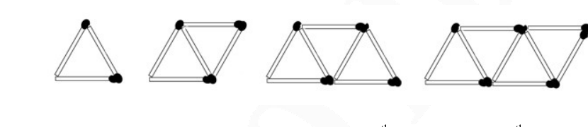
Find the match sticks required to make the a) 5th diagram, b) the nth diagram [2]
Total 5 marks
Topic: Mathematics Metodi: Physical Modeling Competenze: Mathematical Modeling Objects: — Fonte: Testo (PDF) — p.20
**a) ** Trova una soluzione a numeri interi positivi per la seguente equazione. Mostrate il vostro lavoro.
[3]
**b) ** Esaminare il modello dei fiammiferi
Quesito 68
Trova le punte di corrispondenza necessarie per realizzare il a) quinto diagramma, b) il n° diagramma [2]
Total 5 marchi
Topic: Mathematics Metodi: Physical Modeling Competenze: Mathematical Modeling Objects: — Fonte: Testo (PDF) — p.20